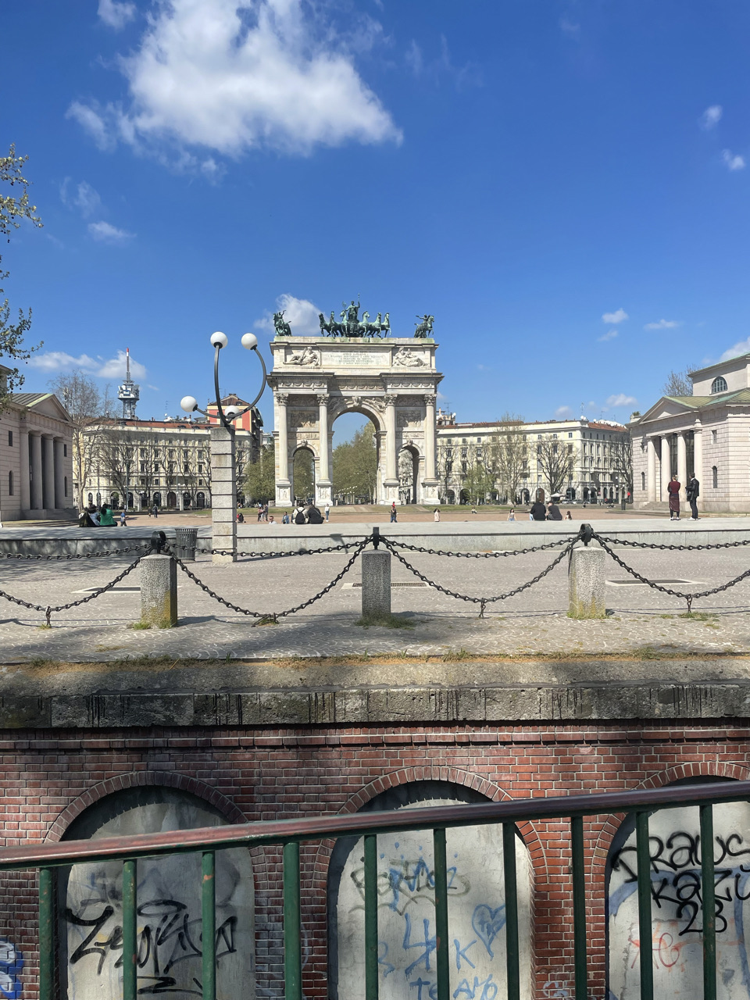
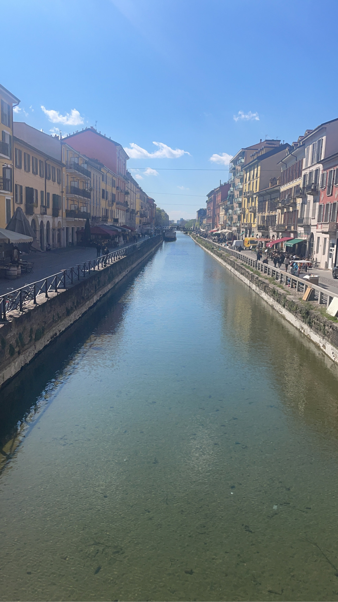
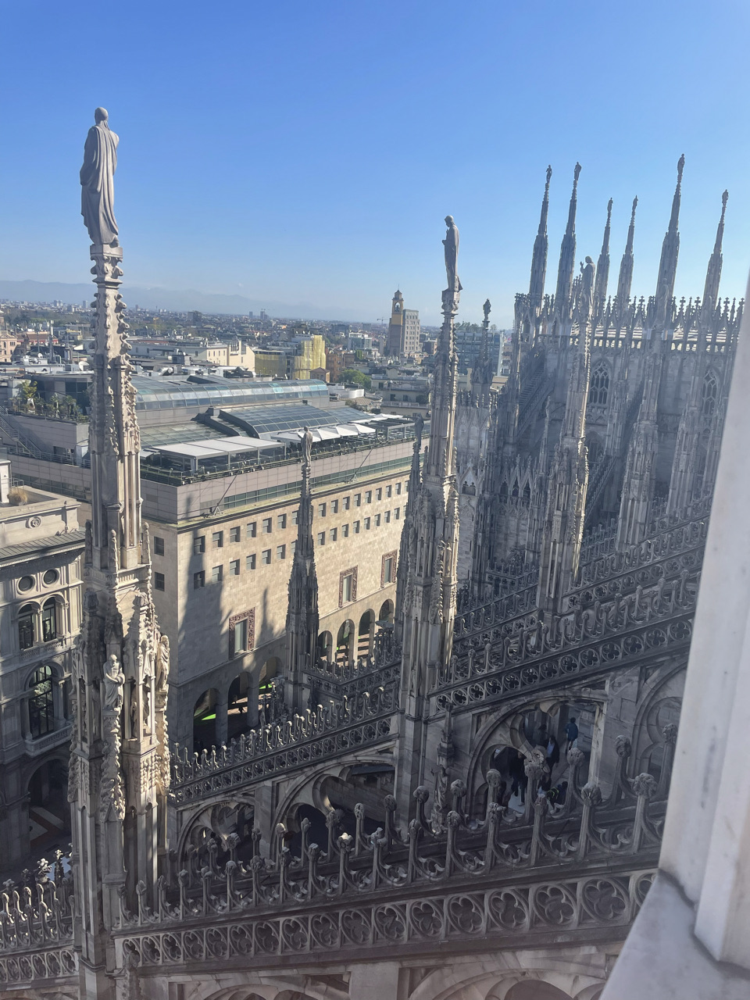
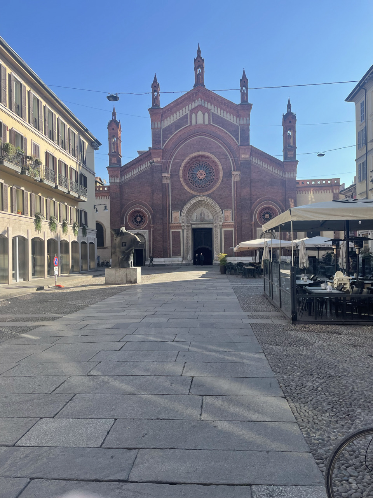
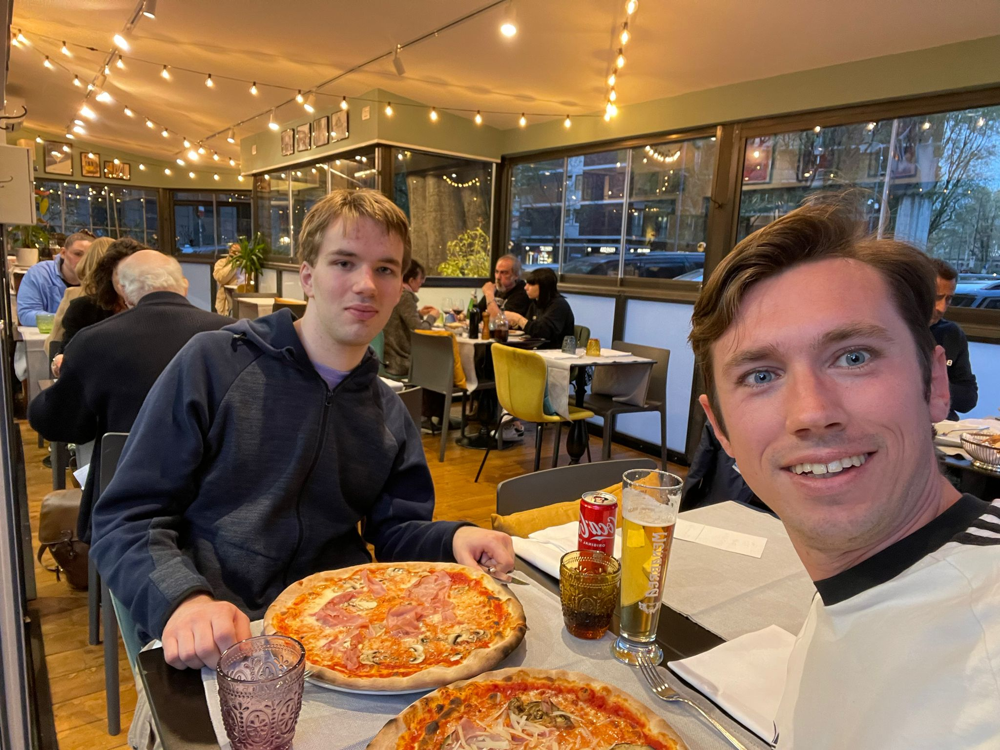

Milaan was de eerste stad die ik tijdens mijn reis door Italië bezocht. Door problemen met de treinreis door Duitsland kwam ik hier een dag later aan dan gepland. Een kleine tip voor toekomstige reizigers: probeer Duitsland met de trein te vermijden als je op tijd wilt aankomen.
Gelukkig was Milaan een fijne plek om mijn reis te beginnen. Een vriend van mijn familie, Jos, werkte op dat moment in Milaan. Daardoor kon ik bij hem slapen en hoefde ik niet meteen mijn eerste nacht in een hostel door te brengen.

Jos had me een paar goede tips gegeven over wat ik moest gaan bekijken. Daarom begon ik bij de bekendste plek van de stad: de Kathedraal van Milaan, de Duomo di Milano.
De Duomo maakte meteen veel indruk op mij. Het gebouw is enorm groot en zit vol met kleine details, beelden en torens. Wanneer je ervoor staat merk je pas echt hoe indrukwekkend het is.

Ik heb twee prachtige dagen in Milaan beleefd. Overdag liep ik alleen door de stad en ontdekte ik hoe het is om in mijn eentje te reizen. Dat was in het begin even wennen, maar het gaf ook veel vrijheid.
Milaan heeft veel mooie passages en pleinen. Terwijl ik door de straten liep kwam ik steeds weer nieuwe plekken tegen die indruk maakten. Soms liep ik gewoon rond zonder precies te weten waar ik uit zou komen, en juist dat maakte het zo leuk.

’s Avonds kwam ik weer terug bij Jos en gingen we samen de stad in om iets te eten. Daar heb ik ook mijn eerste echte Italiaanse pizza van de reis gegeten.
Daarna wandelden we nog door de stad en vertelde Jos me meer over Milaan en gaf hij me tips voor mijn verdere reis. Het was een perfecte eerste stad om mijn reis door Italië te beginnen.
Milaan gaf mij het vertrouwen om verder te reizen en nog meer steden te gaan ontdekken.
